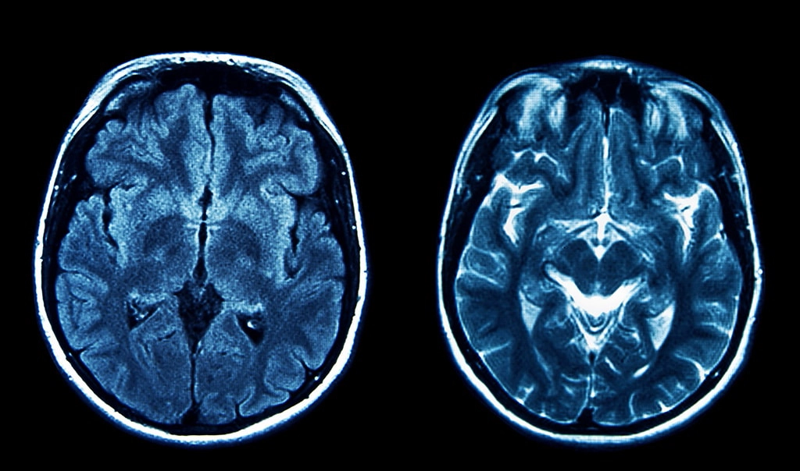
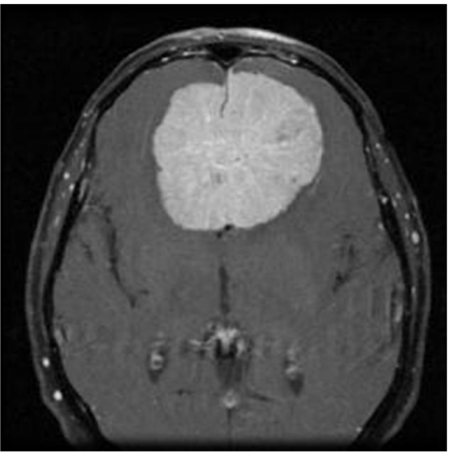
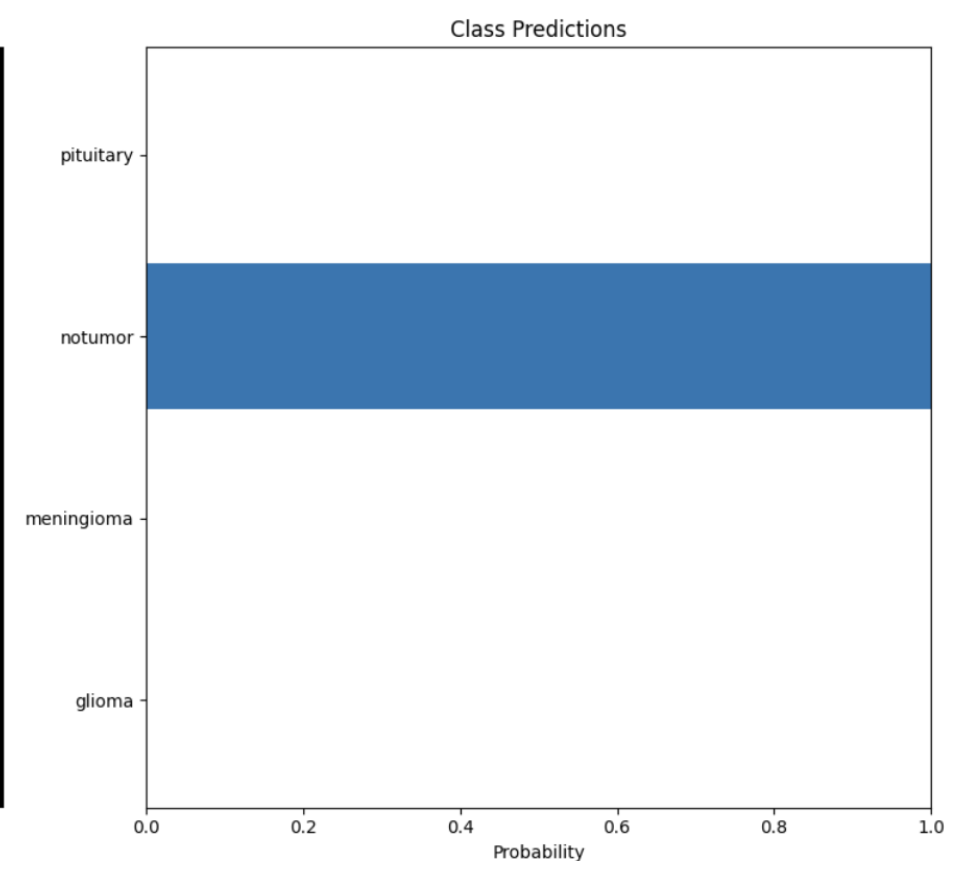
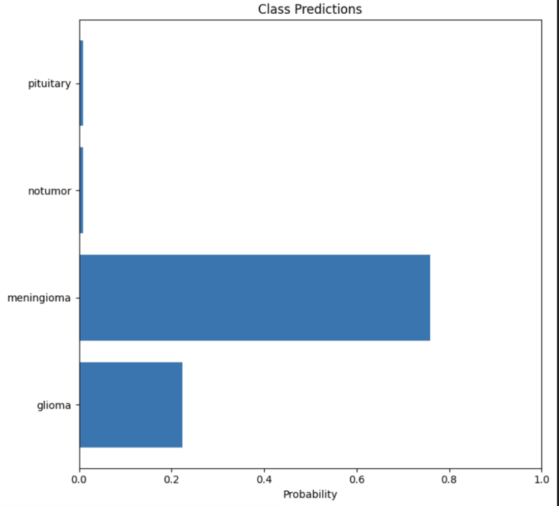
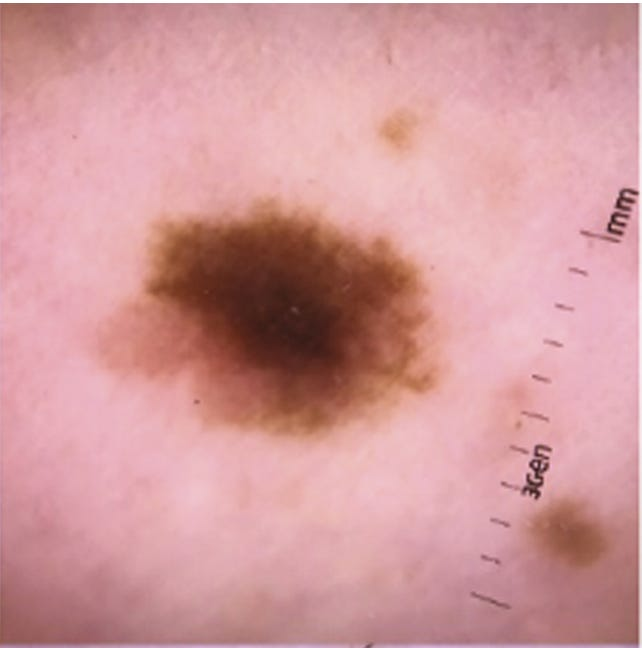

Pixels to Prognosis: Machine Learning in Tumor Detection
Language: Python
Libraries: PyTorch, timm, numpy, pandas, matplotlib, and glob
Abstract: In recent years, Artificial Intelligence (AI)
is innovating the medical field by diagnosing diseases earlier,
offering personalized treatment to patients, and reducing error in hospitals.
This research explores the application of AI in tumor detection through the development of
a machine learning-based program capable of identifying different types of tumors in MRI scans.
The program is designed to assist doctors in identifying tumors quicker with lower error rates.
The program also shows how effortless it is to make a positive impact on our medical care using AI.
Background: Why AI in Tumor Detection?

According to the American Brain Tumor Association,
90,000 Americans are diagnosed with a brain tumor each year. Early and
accurate diagnosis is critical for effective treatment. AI's ability to detect
patterns in medical images can significantly reduce diagnostic errors and improve
patient outcomes.
What is a Tumor?
According to the Cleveland Clinic, "A tumor, or neoplasm,
is a mass of abnormal cells that form in your body. Tumors can affect
tissues, glands, organs, skin and bone. They can be big or small. You
can have a single tumor or more than one" (Cleveland Clinic). Tumors are split into two categories: benign and malignant.
Benign tumors are noncancerous, stay localized, and do not spread to other tissues. Malignant tumors are cancerous
and can rapidly spread to other parts of the body (Cleveland Clinic).
Common Types of Brain Tumors
Meningioma (>30%): Meningioma is
the most common primary brain tumor, accounting for
more than 30% of all brain tumors. Meningiomas originate in
the meninges, the outer three layers of tissue that cover and protect
the brain just under the skull.
Glioma (>30%): Glioma is a common type
of tumor originating in the brain, but it can sometimes
be found in the spinal cord. These tumors arise from the glial cells that surround and support neurons.
Pituitary (10%): The least common of the three is the Pituitary tumor. This tumor commonly forms in the tissue surrounding
the pituitary gland. They may lead to issues with vision or the endocrine system (John Hopkins).
Common Symptoms
There are several common symptoms of tumors. Depending on the tumor's type and location,
a patient may be able to see the tumor raised above the skin or feel it. There are a few other symptoms
including: fatigue, fever/chills, night sweats, or loss of appetite (Cleveland Clinic).
Some symptoms apply specifically to brain tumors such as: nausea, vision issues, headaches,
confusion, memory loss, seizures, and many others (Moffitt). These symptoms
are common across many diseases, so utilizing AI's attention to detail can help doctors quickly narrow
in issues a patient has.
My Program
I wanted to combine my interest in this topic with my love for programming, which led to the idea of making a tumor detecting program.
I coded my project in Python
and used PyTorch and timm libraries for training. I imported about 5000 labeled images of meningiomas, gliomas,
pituitary, and normal MRI scans. In order to train the model I used a pre-trained model and supervised learning. Supervised learning is when
we import images into a model with labels on the correct description. In my case, my images had the correct type of tumor labeled. These images are given
to the model and the model's job is to guess the type of tumor in the image. After the guess, the model gets the correct answer from the label. Going forward
the model adjusts its answers until it has a high accuracy or it runs through all of the test images.

Results


Just like humans have certainty when answering questions, my model's output is a representation of how confident it is in its
answers. The two images on the right are what my program outputs when prompted with an image.
The MRI scan is the test image, and the graphs show its certainty in the answers. The top image shows a certain
prediction. In this guess, the blue bar shows that the model is 100% certain that there is no tumor in the
MRI scan. Compared to the bottom photo, the model is guessing a few different types of tumors.
After training my model on the 5000 images, I ran through a testing set. Testing set images come from
the same source as the training set. Although they are different images, they will be of the same style and quality
as the training. I ran through 10 testing images, and they were all predicted accurately with nearly 100% certainty
in all of the responses. This shows that AI has the capability of diagnosing tumors with very high accuracy
and speed when trained properly.
I eventually ran into a few setbacks with my model, which helps highlight the issues of using AI for detecting tumors.
After I ran my testing set with high accuracy, I decided to find my own images from outside sources to test. I pulled one MRI scan
per each type of tumor and one for no tumor. These images came from various journal articles. Once the images were run through the model, it was immediately
apparent that the accuracy and confidence of the model dropped. The model was able to guess no tumor and meningioma accurately with 100% certainty. My program
had issues detecting the pituitary and glioma. For the glioma, for example, the model predicted that it was a meningioma with over 60% certainty,
then no tumor with about 35% certainty, and lastly a glioma with a sliver of certainty. The google slides below show the results from the testing set and from outside sources.
Why does AI have Difficulty Reading Some Images?
When looking at images uploaded from outside sources, it is evident that the model has
difficulty reading some of the scans. Many of the scans that were correct had lower certainty levels.
In the book "Artificial Intelligence: A Guide for Thinking Humans" by Dr. Melanie Mitchell, she discusses
this issue through a model named AlexNet. In 2012, this program was the best AI for image classification, winning the
ImageNet challenge. It blew away the competition with an accuracy rate of 85%.
After the competition finished, researchers studied the way AlexNet deciphered images. They realized that if images were
distorted slightly, while remaining unnoticeable to humans, AlexNet could no longer identify the image properly.
This issue was not unique to AlexNet, many competitors in the ImageNet competition were susceptible to having difficulties
identifying images outside of the training dataset.
The model in this program is a small scale version of programs like AlexNet. When being trained, it relies on the consistency
of the dataset. This is why the predictions on images from the initial dataset have high accuracy. The accuracy decreases
significantly when pulling images from outside sources due to there potentially being differences in the images that we as humans
cannot see.
Issues with AI
Although AI brings many benefits to the table, it does come with a few setbacks. As my model shows, AI has a hard time
applying its knowledge to images outside of its training set. This can cause many setbacks in the medical field when we consider the fact that
every patient is unique. If we want to make sure that every patient has an accurate diagnosis, the model needs to be trained on tens of thousands (maybe even hundreds) of images.
The model needs to accurately predict all common and uncommon scenarios.
The next issue is that AI lacks transparency. By transparency, I mean that we cannot see what AI "thinks".
When patients go to a hospital and get diagnosed with a disease, they are able to ask the doctor "why". The doctor is then able
to show evidence from tests, symptoms, patient history, etc, that led them to properly diagnose the patient. On the other hand, the AI
will just output the answer with no reasoning or evidence. This wouldn't be an issue if the models had 100% accuracy, but this is rarely the case.
If we need to troubleshoot models we need to know the reasoning behind decisions.

To give an example of what I'm talking about we're going to look at an article from Dr. Mitchell, who has a PhD in AI from
The University of Michigan, called "LLMs and World Models, Part 1". In this article she talks about some of the setbacks of some of the large language
models (LLMs) being built today. One model was used to determine whether a skin lesion is benign or malignant. The model showed promise and had high accuracy when
testing images from the training set. The issues came when they tried new images (similar to what I did with my model).
“[T]he algorithm appeared more likely to
interpret images with rulers as malignant. Why? In our dataset,
images with rulers were more likely to be malignant; thus, the algorithm
inadvertently ‘learned’ that rulers are malignant.”
This model fully encompasses the issues I am trying to highlight. Even if a model has high accuracy,
we may not know if it is guessing correctly for the right reasons. In this case, the skin lesion model
was basically turned into a ruler detector. This may work for most skin lesion images, but this should
not be what the model is relying on.
Looking to the Future
Despite these issues, there is a lot of promise for AI when looking to the future. AI brings
many benefits to the table. If trained properly, AI can transform the way we diagnose diseases and streamline
patient care. With its efficiency, AI can also save doctors time, allowing them to give patients more one-on-one care.
According to HealthfulHelps, as of 2023 about 75% of hospitals in the US have started implementing AI-driven solutions
for their patients. As well as this, about 60% of hospitals are offering AI-based telemedicine so patients can get care from home (HealthfulHelps).
As this technology continues to advance, this impact will continue to grow, and more people will benefit as a result.
The goal for my program is to show how a few thousand images and a solid model can revolutionize the way we get medical care.
Reflection
This was a rewarding project to develop, and I learned so much through my research. This project especially deepened my understanding
of:
Machine Learning Fundamentals: Supervised learning, dataset curation, and training models.
AI in Healthcare: The potential and challenges of AI-driven diagnostics.
Critical Thinking in AI: The importance of testing models beyond controlled datasets.
I have attached the slides for my presentation below. For those who don't use GitHub, there is also a slide of the code.
Thank you
Works Cited
Badža, M. M., & Barjaktarović, M. (2020). Classification of brain tumors from
MRI images using a convolutional neural network. Applied Sciences, 10(6), 1999.
https://doi.org/10.3390/app10061999
Brain tumor symptoms and signs. moffitt. (n.d.). https://www.moffitt.org/cancers/brain-tumor/symptoms/
Brain tumor faqs - learn more or donate today!: Abta.
American Brain Tumor Association. (2024, November 12).
https://www.abta.org/about-brain-tumors/brain-tumor-education/#:~:text=Approximately%2090%2C000%20people%20are%20diagnosed,
primary%20brain%20and%20CNS%20tumors
Brain tumor types. Johns Hopkins Medicine. (2021, November 8).
https://www.hopkinsmedicine.org/health/conditions-and-diseases/brain-tumor/brain-tumor-types
Comment, info, M., GeeksforGeeks , & GeeksforGeeks. (2025, February 27). Supervised and unsupervised learning.
GeeksforGeeks. https://www.geeksforgeeks.org/supervised-unsupervised-learning/
Evanson, J. (2019). Radiology of the pituitary. Encyclopedia of Endocrine Diseases,
339–348. https://doi.org/10.1016/b978-0-12-801238-3.65233-9
HealthfulHelps Editors. (2024, April 15). How many hospitals use artificial intelligence? (New Data). HealthfulHelps.
https://healthfulhelps.com/how-many-hospitals-use-artificial-intelligence-new-data
/#:~:text=Over%2090%25%20of%20hospitals%20now,care%20and%20optimize%20resource%20allocation
Kelley, K. (2020, April 30). What happens during an MRI?. Intermountain Medical Imaging.
https://aboutimi.com/what-happens-during-an-mri/
Mitchell, M. (2025, February 13). LLMS and World Models, part 1. LLMs and World Models, Part 1 -
by Melanie Mitchell. https://aiguide.substack.com/p/llms-and-world-models-part-1
Normal brain (MRI) | radiology case | radiopaedia.org. (n.d.). https://radiopaedia.org/cases/normal-brain-mri-6
Peloso, M. (2022, January 21). Moving toward “virtual biopsy” of gliomas using Artificial Intelligence. Brigham On a Mission.
https://www.brighamhealthonamission.org/2018/12/18/moving-toward-virtual-biopsy-of-gliomas-using-artificial-intelligence/
What is a tumor?. Cleveland Clinic. (2024, December 19). https://my.clevelandclinic.org/health/diseases/21881-tumor